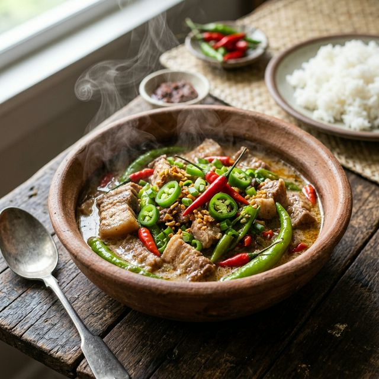

Bicol Express's Recipe

Description:
Bicol Express is a popular Filipino dish originating from the Bicol region. It is known for being creamy and spicy, made with succulent pork pieces simmered in a rich coconut milk sauce with shrimp paste and a generous amount of green chilies.
Ingredients:
- 1 lb pork belly, cut into small cubes
- 2 cups coconut milk
- 1/2 cup coconut cream
- 1/4 cup shrimp paste (bagoong alamang)
- 10-15 green chili peppers (siling haba), sliced
- 2-3 bird's eye chilies (siling labuyo), chopped (optional for extra heat)
- 1 large onion, minced
- 4 cloves garlic, minced
- 1 tablespoon ginger, minced
- 2 tablespoons cooking oil
- Salt and pepper to taste
Directions:
- Heat oil in a large pan over medium heat. Sauté the ginger, garlic, and onion until fragrant and softened.
- Add the pork belly cubes and cook until they are slightly browned.
- Stir in the shrimp paste and cook for another 2 minutes to release its flavor.
- Pour in the coconut milk and bring to a gentle boil. Reduce heat to low and simmer until the pork is tender and the liquid has reduced by half, about 30 to 40 minutes.
- Add the sliced green chilies and bird's eye chilies. Stir well.
- Pour in the coconut cream and continue to simmer until the sauce thickens and starts to render oil, about another 10 minutes.
- Season with salt and pepper if needed (be careful as the shrimp paste is already salty).
- Serve hot with steamed rice and Enjoy!
Back to Home